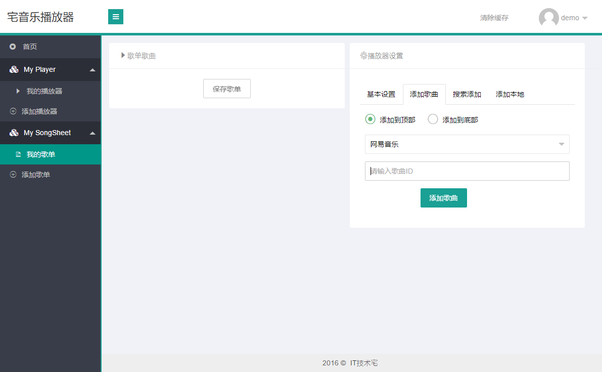
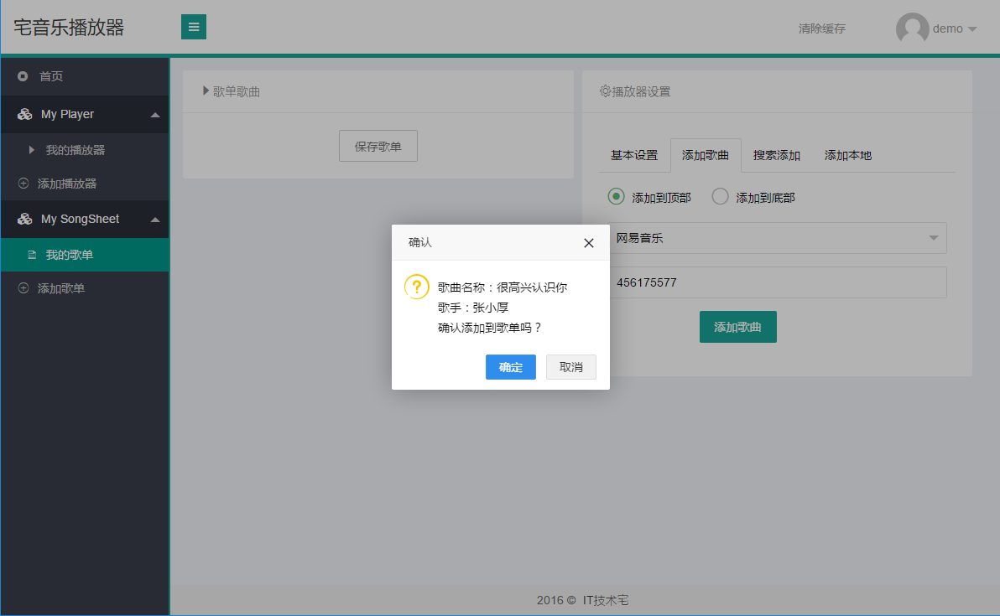
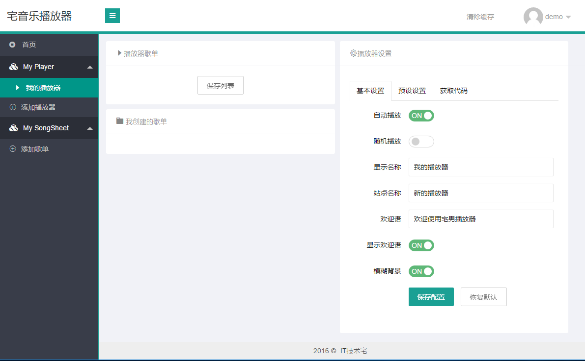

关于网页播放器的实现历程和心得
2021-09-26 23:01:14 谢飞博客日记
今天看到别人博客首页有一个可以收纳在左侧的音乐播放器，觉得很有意识，就想试试自己能不能做一个，过程也是够坎坷的，最大问题是播放器的外观不是自己想要的，还有获取歌单列表，这个列表的获取真是一言难尽啊，主要是现在都注重版权，有些歌曲，你本地有，你上传了酷狗云盘、网易云歌曲网盘，人家不让你调用啊，一样用不上，到最后这个问题我没有解决。
我在百度搜索的时候找到一个好东西宅音乐网页嵌入式播放器 ，我觉得这个播放器的优点是很明显的，首先你能在他们的后台建立歌单，然后你能在这个歌单里上传歌曲，上传方式是把网易云歌曲和酷狗音乐的歌曲id输入进去，就能获取到歌曲，只是还是有个问题，就是音乐云盘里自己上传的歌曲是不让调用的。



这个播放器作者还处于开发阶段，样式的设置是比较少的，只能设置播放器的宽。虽然功能少，但是他方便啊，调用播放器只需要一行代码就足够了
上一篇返回列表
相关文章
-
无相关信息